Nosotros
Productos
Servicios
Contacto
MENU
Nosotros
Productos
Servicios
Contacto
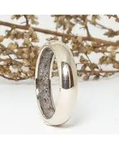
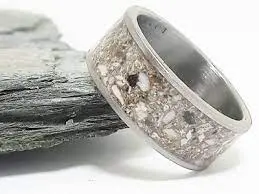
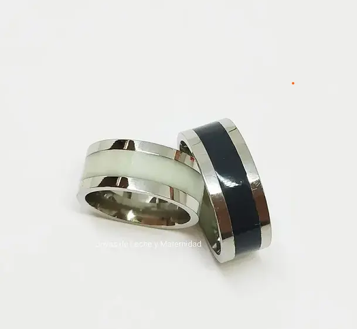
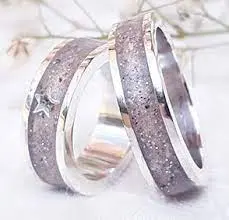
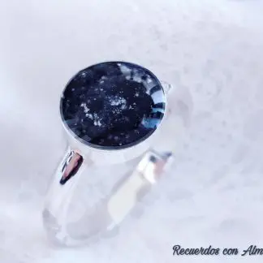
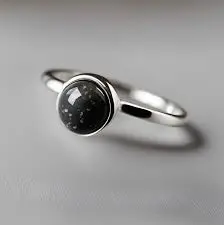
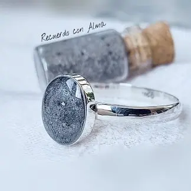
Previous
Next
Anillos
Con nuestros anillos llevarás a tus mascotas al alcance de tu mano, cuando sientas que necesitas recordar a tu fiel compañero, podrás tocar parte de su ser y evocar el recuerdo de acariciarlo.
Collares
Con nuestros colgantes siempre llevarás a tu fiel compañero cerca, teniéndolo al lado de tu corazón.
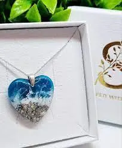
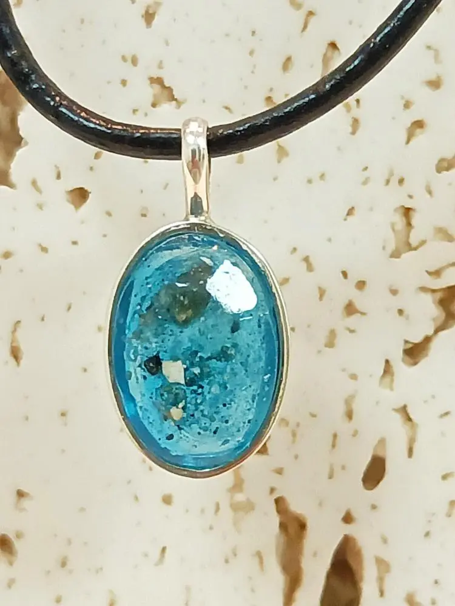
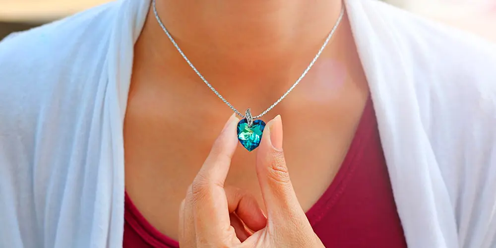
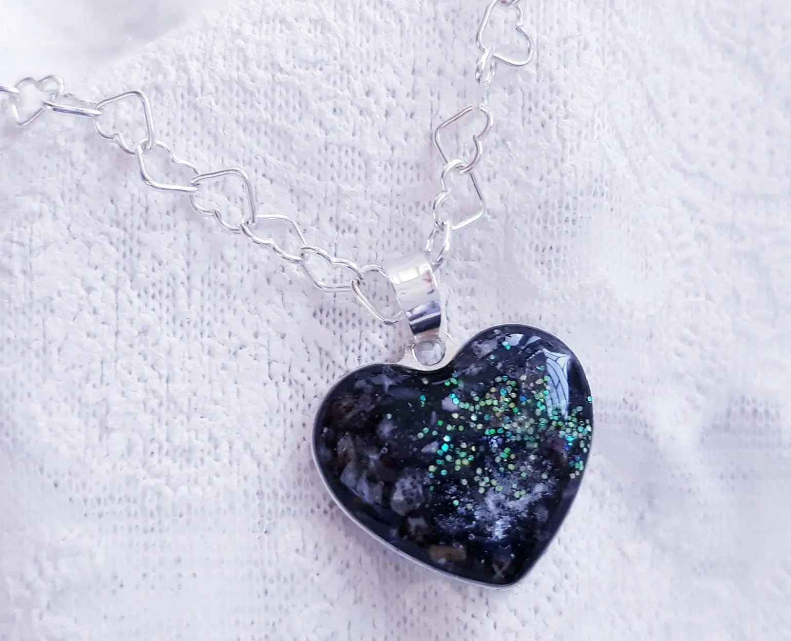
Previous
Next
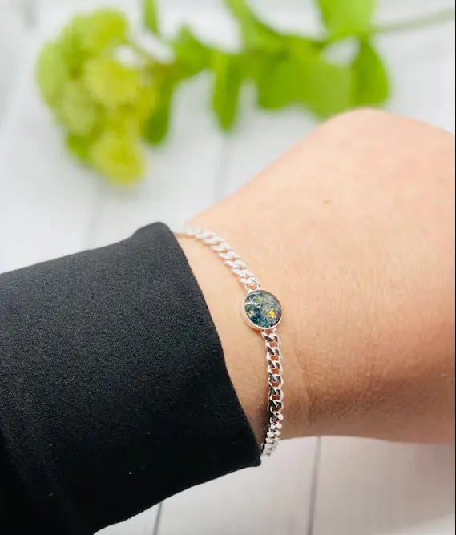
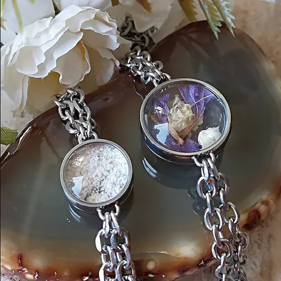
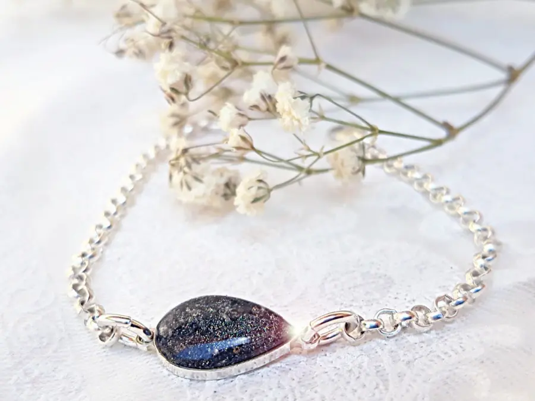
Previous
Next
Pulseras
Con nuestras pulseras lleva siempre a tu fiel compañero cerca, recordarás con amor como posaba su patita en tu muñeca.
Figuras
Nuestras figuras te darán la oportunidad de tener siempre contigo a tu fiel amigo. Podrás verlo en cualquier momento y llevarlo contigo a cualquier lugar.
Son mejores que unas fotografías, ya que plasman la emoción característica de tu gran amigo, la postura que más le gustaba o incluso la carita con la que te miraban.
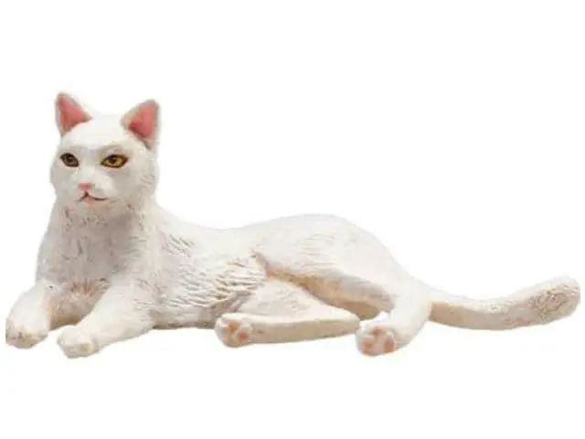
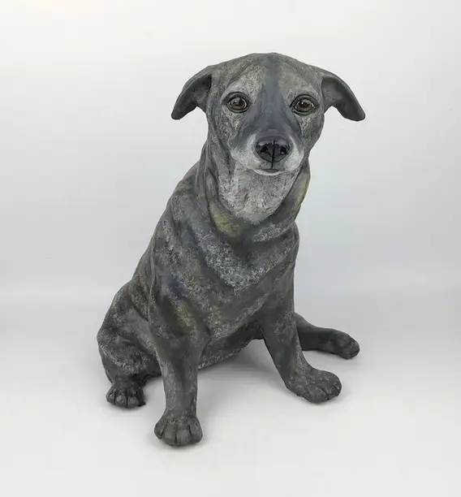
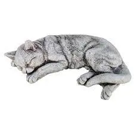
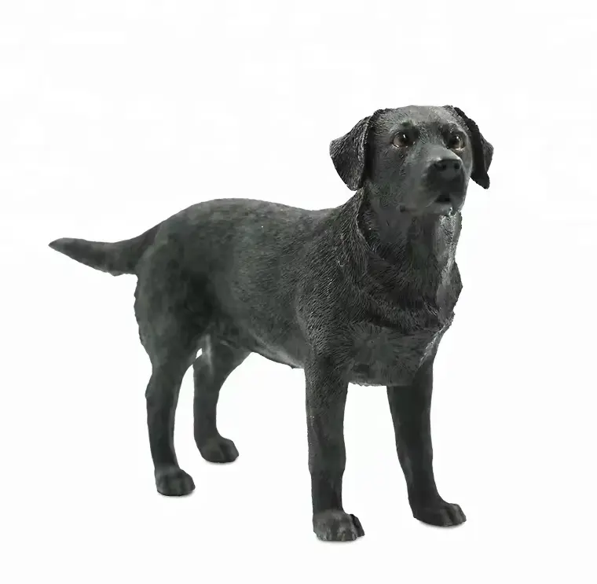
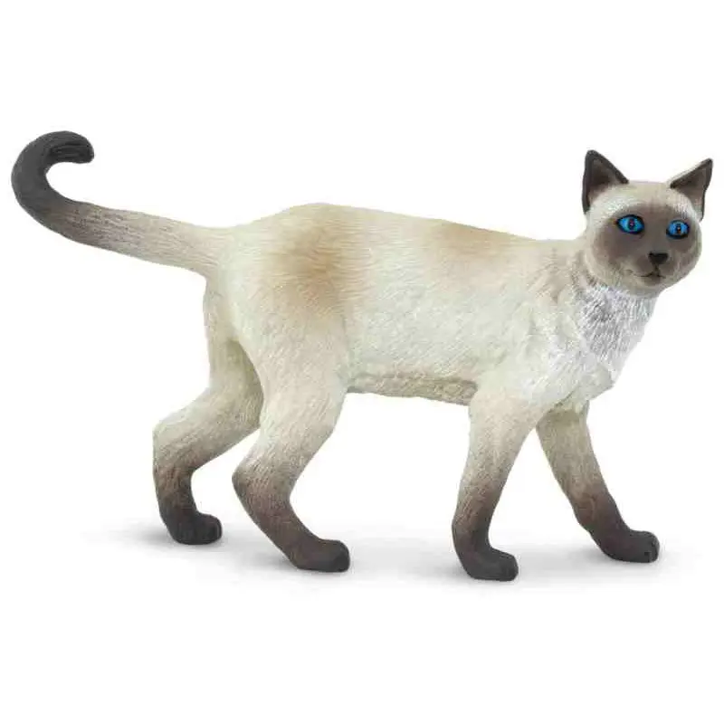
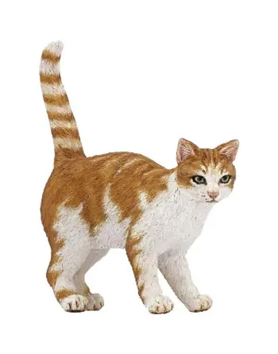
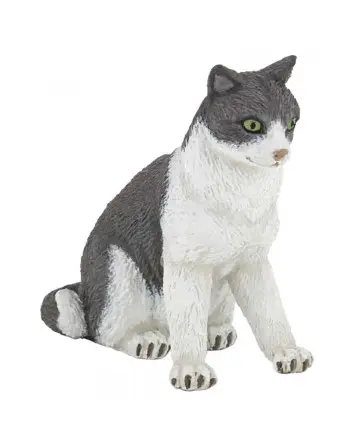
Previous
Next